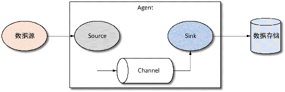
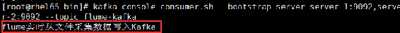

8.1节介绍了通过kafka-log4j-appender将应用程序的日志直接写入到Kafka，这种方式虽然简单，但由于应用程序依赖于Kafka运行环境，因此存在一定的不足。
通常做法是：应用程序将日志写入本地，然后通过日志采集工具将本地日志同步到远程服务器，而Flume就是最常用数据采集工具之一。现在引入Flume，通过Flume将应用程序产生的日志同步到Kafka，基本系统结构如图8-3所示。
图8-3 Flume采集应用日志写入Kafka系统结构
Flume是由Cloudera公司开发的一个高可用、高可靠、分布式海量日志收集、聚合和传输的系统，目前已是Apache下的一个顶级项目。Flume提供了很多与之对接的组件，可以很方便地进行数据传输。编写本书时，Flume的最新版本为1.7.0。Flume 1.x版本相对Flume 0.9.x版本被称为Flume next generation，简称为Flume NG。本书所使用的Flume版本为Flume NG 1.7.0版本。
Flume NG主要由事件源（Souce）、通道（Channel）和接收器（Sink）3个组件构成，由这3个组件组成的一个代理Agent，也就是通常所说的Flume代理，一个Flume代理可能包括多个源、通道和接收器。一个基本的Flume数据流模型如图8-4所示。

图8-4 Flume NG基本数据流模型
Flume将一个具有有效负荷的字节数据流和可选的字符串属性集称为事件（Event），一个事件带有一个可选的消息头，消息头可用于路由判定或者一些用于消息标识的信息，事件是Flume数据传输的基本单位。
事件源就是负责从数据源采集数据将事件发送到一到多个通道中，是数据流入的入口。常见事件源有文件、网络、数据库、Kafka等。
通道负责将事件源流入的数据进行聚合、暂存，通常数据在通道停留的时间不会太长，很快就会被接收器消费，它是位于事件源与接收器之间的构件。通道主要包括非持久化通道（如内存通道Memory Channel）与持久化通道（如文件通道File Channel、数据库JDBC Channel）。
接收器负责从通道消费数据，将数据转移到其他存储系统，例如，将数据存储到文件、数据库、HDFS、Kafka、HBase等。
同时，Flume还提供了拦截器的功能，我们可以在源之后、接收器之前链接0个或多个拦截器，与Spring AOP作用类似，可以通过拦截器在数据流入通道之前或数据流出通道之后对数据进行处理。
Flume提供了负载均衡（load_balance）和故障转移（failover）功能。负载均衡提供了轮询（round_robin）和随机（random）两种策略，可以通过processor.selector属性指定。故障转移是通过为接收器Processor配置维护一个优先级列表，以保证每一个有效事件都能够被处理。通过processor.type来指定是故障转移还是负载均衡，这里我们不进行深入介绍。
Flume内置了很多的源组件和接收器组件，通过相关组件可以很方便地实现数据的传输，同时Flume也提供了很多自定义组件的接口，在本书我们也不再介绍。
在介绍Flume的基本概念时提到了源（Source）和接收器（Sink），这两个组件在介绍Kafka连接器时也曾提到，在数据采取传输方面Flume和Kafka实现原理很类似。然而两个框架侧重点还是不同的。Kafka追求的是高吞吐量、高负载的消息系统及数据流存储平台，同时提供了对流实时计算功能，而Flume追求的是数据来源的多样性、数据流向的多样性，Flume不提供数据存储功能而侧重于数据传输。两者的对比关系如表8-1所示。
表8-1 Kafka与Flume对比
|
对比项 |
Kafka |
Flume |
|---|---|---|
|
功能 |
侧重于数据存储，流数据实时处理 |
侧重于数据采取传输 |
|
开发语言 |
Scala和Java |
Java |
|
数据持久化 |
提供数据持久化 |
不直接提供数据持久化 |
|
副本机制 |
多副本机制 |
无副本机制 |
|
负载均衡 |
支持 |
支持 |
|
故障转移 |
支持 |
支持 |
|
可扩展性 |
良好 |
良好 |
|
容错机制 |
多副本机制以保证容错机制 |
通过维护一个接收器优先级列表 |
|
数据预处理 |
由外部应用程序处理 |
通过拦截器处理 |
|
传输方式 |
主动轮询拉取 |
主动轮询拉取与事件驱动 |
一般情况下，如果是为了追求高吞吐量、数据存储或用于实时计算，可以选择Kafka；如果数据来源和数据流向较多，或者需要将数据进行简单处理，可以选择Flume。然而，在有些应用场景将两者结合起来使用更方便、性能更好。例如，在程序分布式部署时，可以为每台应用程序服务器部署一个Flume NG，通过Flume将数据传输给Kafka，因为Flume部署较Kafka简单，相对轻量级。
在Flume官方网站http://flume.apache.org/download.html下载二进制格式的安装包，这里下载的Flume版本为apache-flume-1.7.0-bin.tar，将Flume安装文件上传至服务器进行解压，这里记Flume的安装路径为FLUME_HOME，我们只介绍Flume单节点的安装，在本书涉及Flume的应用也是基于Flume单节点环境的。解压之后执行以下步骤进行安装配置。
（1）修改flume-env.sh。Flume运行在JVM之上，因此在安装Flume之前，要确保系统已安装了JDK。进入$FLUME_HOME/conf目录，在该目录下有一个Flume环境配置文件flume-env.sh.template，对于单节点的Flume安装，我们只需修改环境配置文件即可。
首先通过cp命令将flume-env.sh.template复制一份并命名为flume-evn.sh，然后通过vi命令打开flume-env.sh文件，在该文件中加入Java安装路径。具体执行命令如下：
cp flume-env.sh.template fluem-env.sh # 复制一份Flume环境变量配置
vi flume-env.sh # vi打开文件编辑
export JAVA_HOME=/usr/local/software/Java/jdk1.8.0_111 # 添加本机Java安装路径
:wq # 保存修改（2）设置系统环境变量。将flume安装路径加入到系统环境变量中，只需在/etc/profile文件中加入Flume的安装路径，然后将Flume的bin目录添加到系统Path中，执行以下命令：
vi /etc/profile # vi打开/etc/profile文件
export FLUME_HOME=/usr/local/software/flume/flume-1.7.0 # 定义Flume环境变量名
export PATH=$PATH: $FLUME_HOME/bin # 将Flume的bin目录添加至系统Path中
:wq # 保存修改
source /etc/profile # 使修改立即生效（3）验证。在$FLUME_HOME/conf目录下有一个Flume采集数据的Source及Sink配置模板文件flume-conf.properties.template，Flume自带了一个用于生成测试数据的Source，通道为内存，接收器为Logger，即将数据以日志形式输出。运行以下命令启动Flume，该启动命令参数说明如表8-2所示。
flume-ng agent --conf /usr/local/software/flume/flume-1.7.0/conf --conf-file conf/flume-conf.properties.template --name agent -Dflume.root.logger=INFO,console表8-2 Flume启动命令参数说明
|
参数名 |
参数说明 |
|---|---|
|
agent |
指定以agent的角色启动，另外一个角色为avro-client |
|
conf或c |
指定配置源和接收器配置文件的绝对路径，不包括配置文件名 |
|
config-file或f |
指定配置源和接收器配置文件的相对路径，相对于执行该命令的目录 |
|
name或n |
指定agent的名称 |
|
D |
用-D后接键值对，指定Java相关的配置，如本例指定将等级为info的日志信息输出到控制台 |
运行以上启动Flume agent命令需要保证--conf和--config-file正确配置，否则会出现以下警告信息而导致启动失败：
log4j:WARN No appenders could be found for logger (org.apache.flume.node.Application).
log4j:WARN Please initialize the log4j system properly.
log4j:WARN See http://logging.apache.org/log4j/1.2/faq.html#noconfig for more info.现在通过Flume将日志文件的数据同步到Kafka的实例详细介绍Flume采集数据的基本配置。创建一个flume-kafka.properties文件，然后按以下步骤完成Flume采集数据写入Kafka的相关配置。
首先指定源、接收器和通道的名称，配置如下：
agent.sources = sc # 指定源名称
agent.sinks = sk # 指定接收器名称
agent.channels = chl # 指定道通名称以上配置，agent表示代理的名称，代理名称可以为任意字符串，当有多个代理时要保证代理名称唯一。
接着配置源，本例是Flume监听tail命令打开的/opt/data/flume/test.log文件内容，主要配置信息如下：
agent.sources.sc.type = exec # 指定源类型为Linux命令
agent.sources.sc.channels = chl # 绑定通道，指定源将事件传递的通道，可以指定多个通道
agent.sources.sc.command =tail -f /opt/data/flume/test.log # 以tail命令打开文件输出流
agent.sources.sc.fileHeader = false # 指定事件不包括头信息然后配置通道信息，本实例采用内存通道，内存通道配置信息如下：
agent.channels.chl.type = memory # 指定通道类型
agent.channels.chl.capacity = 1000 # 在通道中停留的最大事件数
agent.channels.chl.transactionCapacity = 1000 # 每次从源拉取的事件数及给接收器的事件数最后配置接收器，接收器从通道获取信息写入到Kafka，配置信息如下：
# 接收器类型
agent.sinks.sk.type = org.apache.flume.sink.kafka.KafkaSink
# 绑定通道，指定接收器读取数据的通道
agent.sinks.sk.channel = chl
agent.sinks.sk.kafka.bootstrap.servers=server-1:9092,server-2:9092,server-3:9092
# 指定写入Kafka的主题
agent.sinks.sk.kafka.topic=flume-kafka
# 指定序列化类
agent.sinks.sk.serializer.class=kafka.serializer.StringEncoder
# 生产者acks方式
agent.sinks.sk.kafka.producer.acks = 1
# 指定字符编码
agent.sinks.sk.custom.encoding=UTF-8配置接收器类型之所以能指定为KafkaSink，是因为在$FLUME_HOME/lib目录自带了与Kafka集成的flume-ng-kafka-sink-1.7.0.jar文件。在lib目录下还可以看到Flume从Kafka采集数据的flume-kafka-source-1.7.0.jar文件，以及Flume采集数据写入HBase和HDFS的Sink jar文件。同时，还可以指定生产者相关的其他配置，在生产者相关的配置属性名前加上“kafka.producer.”前缀即可。至此，Flume采集文件写入Kafka的配置介绍完毕，在启动Flume agent之前，先创建主题“flume-kafka”，命令如下：
kafka-topics.sh --zookeeper server-1:2181,server-2:2181,server-3:2181 --create --topic flume-kafka --partitions 3 --replication-factor 1启动Flume，为了在控制台打印启动日志，启动命令增加了--Dflume.root.logger=INFO,console配置，启动本例配置的Flume agent命令如下：
flume-ng agent --conf /usr/local/software/flume/flume-1.7.0/conf --conf-file conf/flume-kafka.properties --name agent -Dflume.root.logger=INFO,console为了验证日志是否成功写入到Kafka，我们启动一个消费者消费“flume-kafka”主题，然后在控制台执行echo指令写入一条数据到/opt/data/flume/test.log文件，命令如下：
echo "flume实时从文件采集数据写入Kafka" >/opt/data/flume/test.log在控制台可以看到消费者及时收到Flume采集的数据，如图8-5所示。

图8-5 Flume采集数据写入Kafka的效果
至此，Flume采集数据写入Kafka的相关操作介绍完毕。